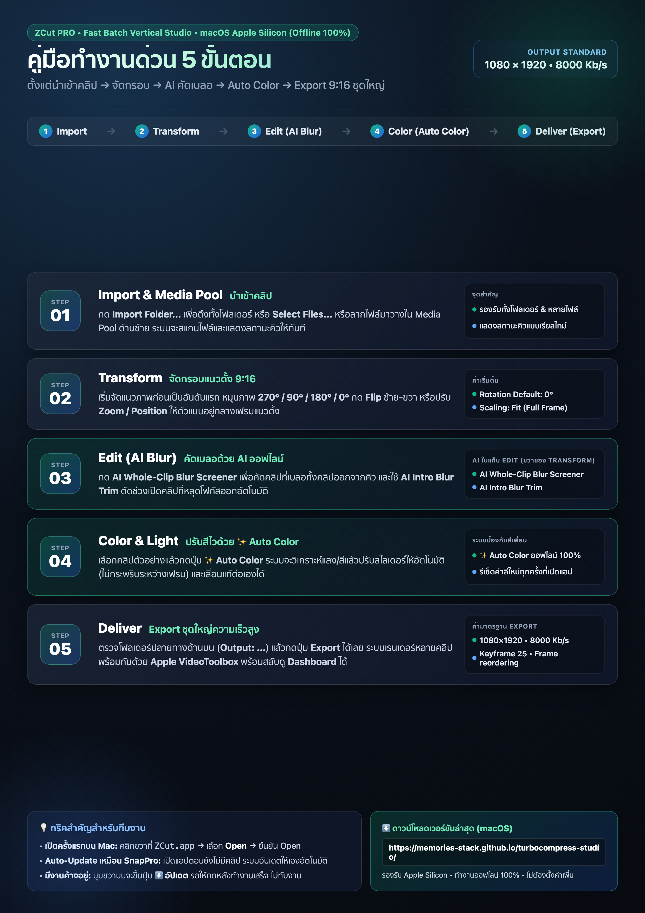

สตูดิโอตัดต่อ ปรับสี AI และเรนเดอร์วิดีโอแนวตั้ง 9:16 แบบชุดใหญ่ความเร็วสูงด้วย Apple VideoToolbox (ออฟไลน์ 100% + ฝัง FFmpeg ในตัว)
ZCut_PRO_Installer.dmgZCut.app ไปวางในโฟลเดอร์ ApplicationsZCut.app → เลือก Open (เปิด) → ยืนยัน Openxattr -cr /Applications/ZCut.app)
